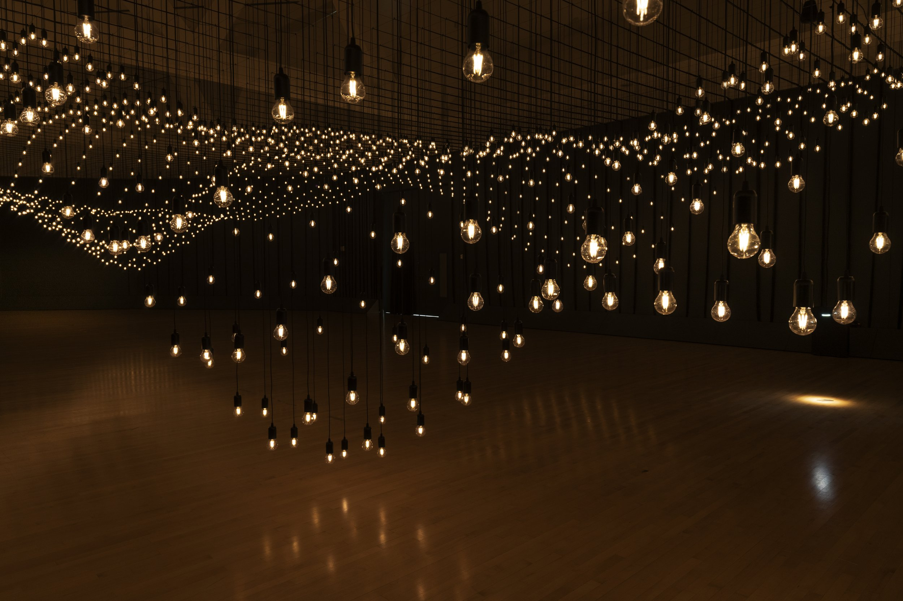

1. “OK art” is an OK idea, –not great, but not bad either. 2. OK artists make OK art. 3. OK artists really want to make great art, they shoot for the stars, but their work ends up being just OK. OK artists are OK with this. 4. Art enthusiasts and cynics alike, leave an OK art exhibition saying “that was OK”. No one is blown away but they don’t feel cheated either. 5. OK art will probably not make it into art history; although someone in the future might find an OK artwork and think “this isn’t so bad.” 6. “Different” and “interesting” are two adjectives often overheard at OK art exhibitions. 7. OK artists are OK with bad reviews, but naturally they prefer good reviews and they keep those and post them on the internet.8. It’s a good idea to call yourself an OK artist before somebody else does. 9. Ambitious, megalomaniac artists feel great relief when they accept they’re just OK. 10. OK ideas are defended passionately but not more than that. 11. (this point was erased during editing) 12. OK art is unlikely to be over or underrated. 13. We hate artists that are A-OK, those bastards! 14. There is no point in making an OK art movement, although fleeting consideration of the concept would be OK.
 Pulse Topology light installation by Rafael Lozano-Hemmer